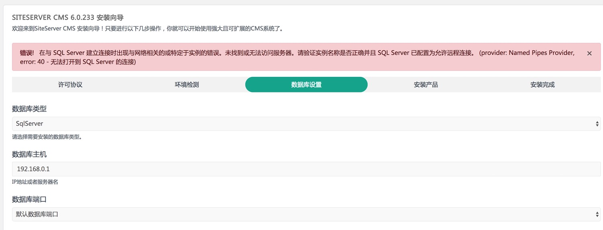

如果在安装到数据库设置这一步时出现数据库连接失败的错误，如下图所示：

则表示数据库连接不上，需要按以下步骤进行设置：
1、用计算机名访问服务器时，需要开启sql server browser服务; 2、检查自带防火墙和自己安装防火墙是否放行相应1433端口，在“高级安全 Windows 防火墙”的左窗格中，右键单击“入站规则”，如下图所示：
3、通过netstat -an命令，检查1433端口是否打开，如下图所示：

4、启动SQL Server Configuration Manager（简写SSCM），确保右侧的“SQL Server(实例名)”和“SQL Server Browser”的状态都为“正在运行”。如下图所示：
5、同界面下，在SQL Server 网络配置下，有SQLEXPRESS2014的协议，将TCP/IP的状态，设置为启用，如下图所示：
6、启用后，在TCP/IP上点击右键，选择“属性”，将选项卡切换到“IP地址”页。在任意IP处，设置好IP地址，TCP端口，并将“已启用”设置为“是”。
7、打开SQL Server Management Studio (SSMS)，登录之后右键选择 “属性” ，出来界面之后，左侧选择“安全性”，选中右侧的“SQL Server 和 Windows 身份验证模式”以启用混合登录模式。如下图所示：
8、在相同界面，左侧选择 “连接” ，勾选 “允许远程连接此服务器” ，然后点 “确定” 。如下图所示：
9、展开“安全性”→“登录名”→选择要登录的帐号，通常是”SA“，右键 “属性” ；如下图所示：
在常规区域，设置好密码，如下图所示：
在”状态“选项页，将”是否允许连接到数据库引擎“选为”授予”，将“登录”设置为“已启用”。如下图所示：
10、右键数据库，选择“方面”，如下图所示：
在右侧的方面下拉框中选择 “服务器配置” ；将 “RemoteAccessEnabled” 属性设为“True”，点 “确定”：
至此已设置完毕。退出后用账户sa登录，成功即表示sa帐户已经启用。设置完成后。最好是重启一下计算机，然后就可以远程管理和操作数据库了。其他几种数据库类型的设置方案原理也是类似，可以在网站搜索。